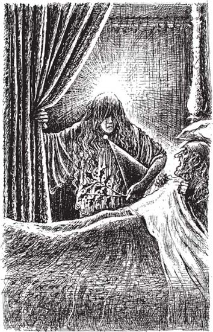

5
Listen to Part 1:

Bóng ma Giáng Sinh Quá Khứ
Khi Scrooge tỉnh dậy, trời đã rất tối. Ông nghe thấy tiếng chuông. Trong nhà thờ gần đó có chiếc đồng hồ. Chuông trên đồng hồ đổ 12 hồi. Mười hai giờ đêm! Scrooge sửng sốt. Hai giờ chiều ông mới ngủ thiếp đi. Giờ đã là 12 giờ đêm.
“Mình có ngủ một ngày trời không nhỉ?”, Scrooge tự hỏi. “Hay giờ là ban ngày? Có phải giữa trưa không?” Ông kéo tung rèm cửa quanh giường mình. “Nhưng sao lại tối thế này. Có chuyện gì với mặt trời rồi?”
Ông ngồi dậy khỏi giường, đi đến cửa sổ. Ông nhìn ra ngoài, nhưng không thấy ai cả. Cả thành phố tĩnh lặng. Đúng rồi, bây giờ là 12 giờ đêm mà.
Scrooge trèo lên giường, kéo rèm cửa lại. Ông cảm thấy lo lắng, không sao ngủ nổi. Ông bỗng nhớ đến bóng ma Marley. Ông nhớ những gì bóng ma đã nói. Một bóng ma khác sẽ tới thăm ông vào lúc một giờ sáng. Ông nằm im trên giường. Thời gian trôi qua rất chậm.
Tiếng chuông lại đổ hồi sau khi mười hai giờ mười lăm phút. Rồi đổ hồi nữa khi mười hai giờ rưỡi. Khi mười hai giờ bốn mươi lăm, và rồi lại đổ hồi nữa. Đã một giờ rồi.
Đột nhiên, có một bàn tay hất tung rèm cửa quanh giường lên. Scrooge nhìn lên, và thấy khuôn mặt một bóng ma khác!
Bóng ma trông rất kỳ lạ. Nó giống như một ông già nhưng chỉ bé bằng đứa trẻ. Mái tóc dài của bóng ma bạc trắng như tóc ông già, nhưng khuôn mặt lại mịn màng, mềm mại như mặt trẻ thơ. Hai cánh tay, hai bàn tay to lớn, mạnh mẽ, nhưng đôi chân lại nhỏ xíu.
Bóng ma mặc một chiếc áo choàng dài màu trắng. Trên tay cầm một nhành cây xanh của cây tầm xuân. Scrooge không ngạc nhiên khi thấy cây tầm xuân. Tầm xuân lúc nào cũng xanh vào mùa đông. Nhưng ông thấy lạ vì trên áo của bóng ma có những bông hoa mùa hạ.
Có một điều kỳ lạ nữa. Ánh sáng phát ra từ trên đỉnh đầu bóng ma. Và dưới nách nó còn có một cái mũ - một chiếc mũ nhọn, to bản.
Listen to Part 2:
Rồi Scrooge nhận ra rằng bóng ma cứ thay hình đổi dạng luôn. Lúc thì nó có một chân, rồi lúc thì nó có tới hai mươi chân. Đôi khi nó chỉ là một cơ thể không đầu. Hoặc là có đầu mà không có thân.
“Marley nói một bóng ma sẽ tới vào lúc một giờ”, Scrooge lên tiếng, “Ngài có phải bóng ma mà Marley đã nói đến không ạ?”
“Ta chính là bóng ma đó”, giọng bóng ma nhẹ nhàng trả lời.
“Ngài là ai? Ngài là cái gì?”, Scrooge hỏi.
“Ta là Bóng ma Giáng sinh Quá khứ. Ta là bóng ma của cuộc sống quá khứ của ngài.”
“Vì sao ngài đến đây?”, Scrooge hỏi.
“Ta đến để giúp ngài”, bóng ma trả lời. Nó nắm chặt lấy cánh tay Scrooge. “Hãy xuống giường đi. Đi theo ta.”
Bàn tay của bóng ma mạnh mẽ lắm, nhưng nó vẫn nắm lấy tay Scrooge rất nhẹ. Họ hướng về phía cửa sổ.
“Tôi không phải bóng ma mà”, Scrooge nói. “Tôi là con người. Tôi sẽ rơi xuống mất nếu đi ra ngoài cửa sổ đấy.”
“Ngài sẽ không rơi xuống đâu”, bóng ma trả lời, “Ta đang nắm tay ngài đây.”
Listen to Part 3:
Họ bay qua cửa sổ phòng Scrooge. Đột nhiên, giữa đường, họ thấy xuất hiện cánh đồng bên cạnh. Thành phố đã biến mất. Ngày đông lạnh giá, tuyết phủ trắng xóa mặt đất.
“Tôi biết đây là đâu rồi”, Scrooge lên tiếng, “Lúc nhỏ tôi sống gần đây.”

Bóng ma mặc một chiếc áo choàng dài màu trắng. Trên tay cầm một nhành cây xanh của cây tầm xuân.
Nội dung
- Trang tiêu đề
- Nội dung
- Giới thiệu về tác giả
- Giới thiệu về cuộc sống ở Anh vào thế kỷ 19
- 1 Ebenezer Scrooge
- 2 Khách của Scrooge
- 3 Bóng ma của Marley
- 4 Tin tức dành cho Scrooge
- 5 Bóng ma của Giáng sinh quá khứ
- 6 Scrooge thời thơ ấu
- 7 Giáng sinh với gia đình Fezziwig
- 8 Người con gái yêu Scrooge
- 9 Bóng ma của Giáng sinh hiện tại
- 10 Giáng sinh với gia đình Cratchit
- 11 Không khí Giáng sinh vui vẻ ở mọi nơi
- 12 Bóng ma của Giáng sinh tương lai
- 13 Cậu bé Tiny Tim
- 14 Một con người hoàn lương
- Những điểm nhấn để hiểu bài
- Trang bản quyền